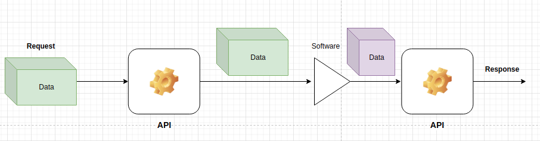

Application Programming Interface basics¶
An API is short for Application Programming Interface. It is a set of methods that allows different software parts to interact with each other. The interaction can be done without any internet connection (Windows requests the GPU to render something) or it can be done via the internet (we access our bank account via the internet).
The application part of the definition refers to various applications that are running on a computer.
The programming part of the definition refers to the underlying code that is used to implement the interaction between the applications.
The Interface part of the definition refers to the a set of rules by which computer program interacts.

The initial batch of data that is sent from the client to the server/software is called the request.
A server can be any piece of code that runs on a computer. Sometimes, a web server, a database server, a game server, a desktop application, a mobile application, a desktop or mobile game is also called a server.
Then, an API waits for the data from the software to come in and sends the output of the software back to the user. The output from the piece of software is called the response.
To put it more mathematically, an API is a function that maps the request to the response:
Or
In a machine learning universe, the request is the data that is sent to the machine learning algorithm and the response is the output of the algorithm. Thus the API becomes a function that encompasses all the data preparation, the algorithm itself and returning of the results (in the CT winning case - a probability):
API definitions¶
When developing APIs it is very important to know certain concepts and definitions. This helps immensly when trying to integrate the developed API in other systems.
HTTP methods¶
HTTP stands for hyper text transfer protocol. It is a set of rules that defines how the data is sent from the client to the server. The standart and the most popular methods are:
- GET: request data from the server without altering the underlying resources in any way.
- POST: send data to the server and create a new resource on the server.
- PUT: update data on the server and replace the existing resource.
- DELETE: delete data from the server and remove the resource.
The term resource is a loose term that refers to any piece of data that is stored on the server: it can be a row in a database, it can be hyper parameters or it can even be a file.
To read more about HTTP methods, check out the Wikipedia article.
URL¶
A URL (uniform resource locator) is a string that contains the address of a resource. It is used to identify the resource on the internet. For example,
https://www.google.com
When we type in the above link into our browser, under the hood, a request is sent to the server and we are greeted by the well known homepage of google.
URL query parameters¶
URL query parameters are a defined set of parameters attached to the end of a url. To append query parameters to the end of a URL, use the symbol ? followed immediately by query parameters:
http://www.example.com?param1=value1
The parameters sent to server in this case is called param1 and its value is value1.
To send multiple query parameters, use the & symbol to separate them:
http://www.example.com?param1=value1¶m2=value2
RESTful API¶
A RESTful API is an architectural style for an application program interface (API) that uses HTTP requests to access and use data. That data can be used to GET, PUT, POST and DELETE data types, which refers to the reading, updating, creating and deleting of operations concerning resources.
As per RedHat documentation cite{redhat:rest}:
A client-server architecture made up of clients, servers, and resources, with requests managed through HTTP.
Stateless client-server communication, meaning no client information is stored between get requests and each request is separate and unconnected.
Cacheable data that streamlines client-server interactions.
A uniform interface between components so that information is transferred in a standard form. This requires that:
resources requested are identifiable and separate from the representations sent to the client.
resources can be manipulated by the client via the representation they receive because the representation contains enough information to do so.
self-descriptive messages returned to the client have enough information to describe how the client should process it.
hypertext/hypermedia is available, meaning that after accessing a resource the client should be able to use hyperlinks to find all other currently available actions they can take.
A layered system that organizes each type of server (those responsible for security, load-balancing, etc.) involved the retrieval of requested information into hierarchies, invisible to the client.
Endpoint¶
An API endpoint is an URL that handles a certain functionality of the API. For example, if we have an API that allows us to get information about a person, we can have an endpoint that handles the GET request for a person:
http://www.example.com/person/1
Status codes¶
An API status code is a number that is used to indicate the status of the request. The most popular status codes are:
- 200: OK
- 201: Created
- 202: Accepted
- 204: No Content
- 400: Bad Request
- 401: Unauthorized
- 403: Forbidden
- 404: Not Found
- 405: Method Not Allowed
- 409: Conflict
- 415: Unsupported Media Type
- 500: Internal Server Error
Any response after a request has, in some format, the field status code which indicates for the developer the status of the request.
JSON¶
JSON stands for JavaScript Object Notation. It is a very popular data format that is used to transfer data between a client and a server. The structure of a JSON is a dictionary: it is comprised of key-value pairs. For example:
{'data': {'person': {'name': 'John Doe', 'age': '30'}}}
The key data stores a value of a dictionary with the key person and the value of the key name is John Doe and the value of the key age is 30.
API implementation in Python¶
Right now, Python has 3 major frameworks for implementing APIs:
Django
Flask
FastAPI
These frameworks lets you worry about the logic behind certain endpoints and not dealing with server side logic.
Throughout this book, we will use FastAPI as the basis of API creation. To read the great documentation, visit https://fastapi.tiangolo.com/
A simple API¶
Lets create an API which accepts a GET method with a float and returns the root of that float. The code is in the file
api-root/get_root.py
!cat api-root/get_root.py
# Importing the fastAPI library
from fastapi import FastAPI
# Creating an instance of the FastAPI class
app = FastAPI()
# Creating an endpoint with the GET method
@app.get("/root_of_number")
def root_of_number(number: float):
"""
This function returns the square root of a number
"""
return {"root": number ** 0.5}
We can startup the API using the following command:
uvicorn api-root.get_root:app
The output displays the following message:
INFO: Started server process [1457528]
INFO: Waiting for application startup.
INFO: Application startup complete.
INFO: Uvicorn running on http://127.0.0.1:8000 (Press CTRL+C to quit)
The first INFO message indicates that the server process has started and the assigned internatl PID on the system is 1457528. The second message indicates that the server is waiting for the application to start. The third message indicates that the application has started. The fourth message indicates that the server is running on the localhost on port 8000.
FastAPI framework has now isolated a portion of RAM and other resources for the running API. The program is now in runtime and is ready to accept requests.
By default, the application is waiting for any data via http://127.0.0.1:8000.
To test out the application, in your browser, we can try querying the endpoint:
http://127.0.0.1:8000/root_of_number?number=2
The response is a JSON object:
{"root":1.4142135623730951}